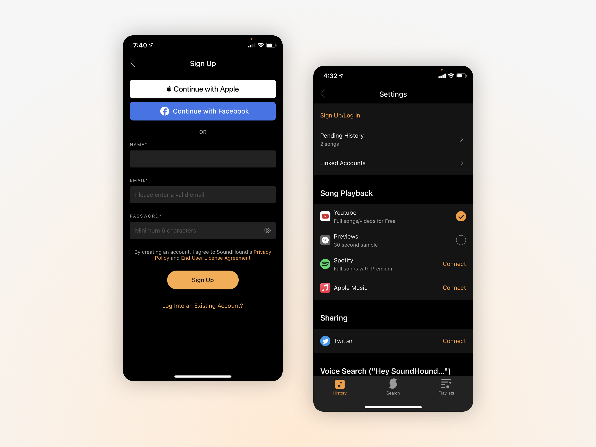

SoundHound
Music identification app on iOS + Android
Overview
SoundHound is a music discovery app available on iOS and Android. While it has mainly been used as for music identification, the increased prevalance of streaming over the years has provided a new opportunity for growth. As a UX designer at SoundHound, I worked with a small team to bring new features and visual updates across the app on both platforms.

Playlists
As streaming became the most common way of experiencing music, we looked into how to incorporate a more personalized experience for SoundHound users. Playlists were created with the intention of helping users curate their discoveries, find music similar to their favorites, and overall expand the app's role from solely being for music identification.
We initially launched with a simple design of a playlists page to gauge user interest and did some user testing to gather feedback on what they wanted in such a feature. Many users stated that they preferred a curation of music based on their listening habits and favorites, and that a discovery app such as SoundHound should curate based on their discovered songs. Following this, we created a second phase design that focused on these requests and emphasized the newly-added feature of creating one's own custom playlist. In a user polling session, we found that a strong majority preferred the new design with side-scrolling and main playlists at the top.

Artists & Albums
As part of SoundHound's app refresh, I redesigned the pages for artists and albums to bring them more in-line with an updated style guide.
We worked as a team to re-order the information on the page and provide a strong emphasis on music streaming. This led to bringing the artist's top songs above the screen fold, and relegating secondary info such as the artist's biography to the bottom of the page. Pages such as the artist's image gallery are more accessible (by tapping an icon) versus being hidden behind an unintuitive side-scroll in the old design.


Settings
The settings and sign-up experience for SoundHound was next on the list of pages to tackle; we opted for a darker background to make our signature orange hue stand out more for the new style guide.
Under the settings page, we reduced the number of sections and removed parts that were either no longer of use or options that were not applicable to the vast majority of users. We chose to order the sections based on interaction rates from our current users, with the most important sections towards the top. Vague section titles, including the app's tutorial on voice control, were further clarified with updated copy changes.